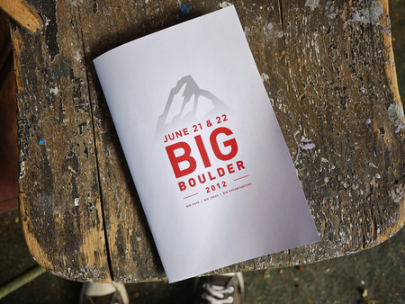
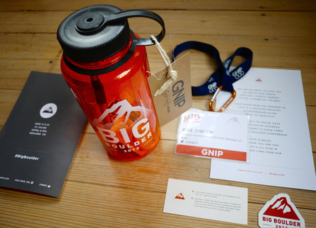
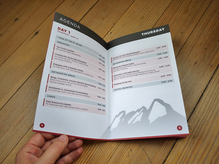

dojo4 recently had the opportunity to work closely with GNIP to produce the BigBoulderConf branding, website and all conference collateral (badges, lanyards, brochures, signage, welcome cards, carabiners, water bottles, sunscreen, hangtags and chapstick) . The goal of the brand was to combine Boulder's mountain aesthetic with the professionalism of the content of the conference, "the future of publicly-available social data." We used the iconic image of the Flatirons and simplified it into a triangular shaped mountain so that it would be recognizable by anyone. If you notice, the mountain logo contains the 3 main shapes that make up the first, second and third flatirons.
BigBoulderConf is in session today, June 21 and tomorrow June 22.
Check it out!


